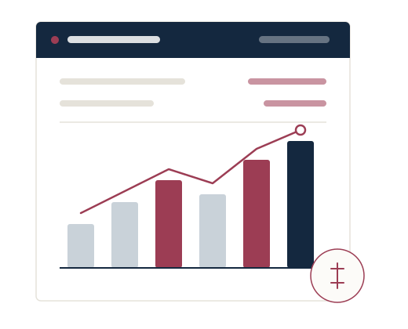

“Necesito ordenar mi contabilidad.”
Contabilidad mensual
Registro, conciliaciones, cierres, estados financieros y seguimiento de la información.
Contabilidad, finanzas y datos · Costa Rica · Atención remota
Contabilidad, declaraciones tributarias, análisis financiero y automatización de reportes para empresas y profesionales en Costa Rica. Te ayudo a ordenar tu información contable, entender tus resultados y tomar decisiones con más claridad.

Gabriela Prado MoraContadora Privada y Pública Incorporada

01 / Punto de partida
Si te reconociste en alguna, por ahí podemos empezar.
02 / Lo que puedo resolver
“Necesito ordenar mi contabilidad.”
Registro, conciliaciones, cierres, estados financieros y seguimiento de la información.
“Quiero saber realmente cómo está mi negocio.”
Interpretación de resultados, márgenes, variaciones, flujo de caja e indicadores.
“Tengo demasiadas tareas manuales.”
Excel, Power BI, Python, automatización de reportes y mejora de procesos.
“Necesito preparar o revisar mis estados financieros.”
Estados financieros, análisis, ordenamiento y preparación de información, incluida la transición a NIIF.
“Mi contabilidad necesita una revisión.”
Revisión de información, procesos, saldos y oportunidades de mejora.
También doy apoyo en planillas, declaraciones tributarias, cuentas por cobrar y pagar, y asesoría en la implementación de ERP.
Un buen primer paso suele ser el diagnóstico contable: revisamos tu información, conversamos sobre qué necesitás y definimos juntos el alcance del servicio. También podés contratar solo la parte que te haga falta. Contame brevemente qué estás tratando de resolver y te digo por dónde empezar.
Contame tu situación
03 / Perfil
Trabajo la contabilidad conectada con las finanzas y el análisis de datos. Me interesa que la información esté ordenada, pero también que pueda leerse y utilizarse para tomar decisiones.
Atiendo directamente a cada cliente para entender cómo opera su negocio, qué información tiene disponible y qué necesita resolver. Desde ahí, construyo una forma de trabajo clara y acorde con su realidad.
Mi experiencia en información financiera y herramientas de análisis me permite acompañar tanto el orden contable como la búsqueda de mejores formas de reportar y entender los resultados.
Me interesa especialmente conectar la contabilidad con herramientas que permitan analizar mejor la información.
04 / Forma de trabajo
Conversamos sobre tu negocio, cómo opera y qué información tenés hoy.
Ponemos la contabilidad al día y dejamos la información consistente.
Revisamos qué dicen los números sobre tu operación y tu rentabilidad.
Automatizamos lo repetitivo y dejamos reportes que puedas usar.
05 / Preguntas frecuentes
Sí. Puedo acompañar a empresas pequeñas y profesionales que necesitan ordenar o entender mejor su información.
Depende del tamaño de tu empresa, del volumen de movimientos y de lo que necesités resolver. Conversamos sobre tu situación y te preparo una propuesta con alcance y costo claros.
Sí. Podemos conversar sobre una necesidad puntual y definir el alcance correspondiente.
Podemos revisar tu sistema actual y trabajar con él cuando sea adecuado para tu operación.
Sí. Puedo apoyar con análisis, reportes, ordenamiento de información o procesos específicos.
Sí. El análisis financiero puede partir de la información que ya tengas disponible.
Revisamos el estado de la información y conversamos sobre una forma ordenada de abordar la situación.
Sí. El trabajo puede organizarse de forma remota con documentos digitales y reuniones en línea.
Necesito conocer brevemente tu actividad, lo que quieres resolver y qué información tenés disponible.
06 / Contacto
Contame qué está pasando con tu contabilidad o tus números y te respondo para ver por dónde empezar.